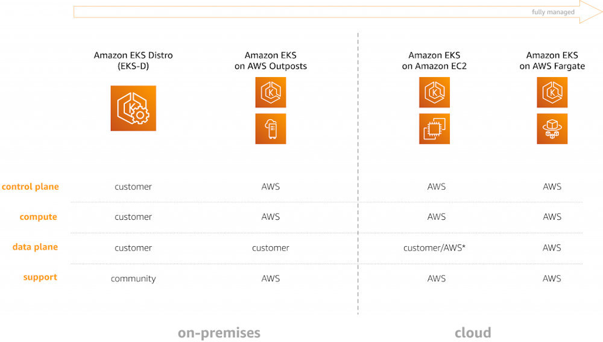
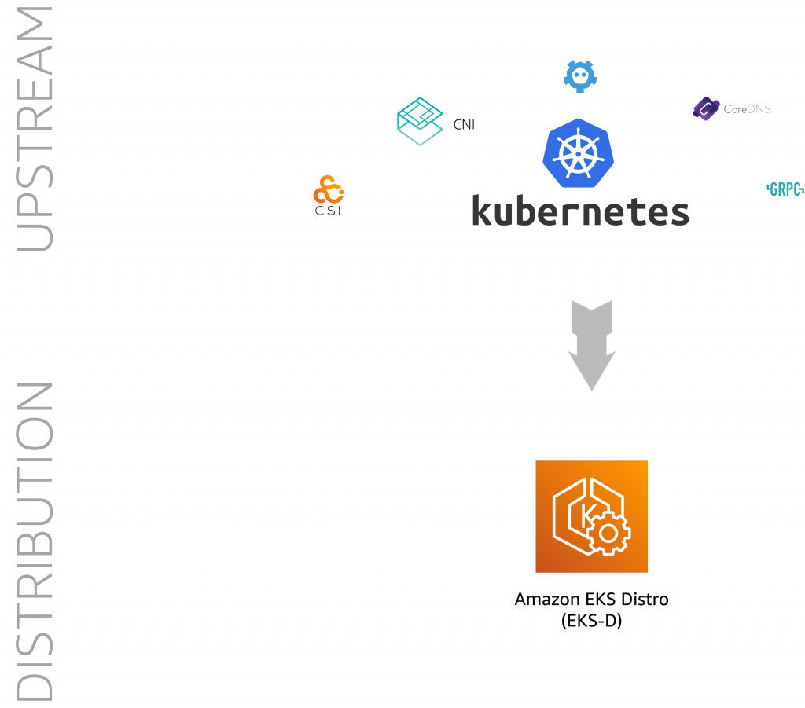

今天，我们发布了 Amazon EKS Distro（EKS-D），这是一个基于 Amazon Elastic Kubernetes Service（Amazon EKS）的 Kubernetes 发行版，并由 Amazon EKS 用于创建可靠和安全的 Kubernetes 集群。通过 EKS-D，你可以依赖 EKS 部署的相同版本的 Kubernetes 及其依赖项。这包括最新的上游更新以及扩展的安全补丁支持。EKS-D 遵循与亚马逊 EKS 相同的 Kubernetes 版本发布周期，我们以 GitHub 上的开源项目的方式 提供。
在这篇文章中，我们将介绍 EKS Distro，并使用合作伙伴生态系统中的例子来解释开始使用 EKS Distro 的不同方法。
什么是 EKS-D？
通过 EKS Distro，你现在可以在通过 EKS 提供的相同 Kubernetes 发行版上实现标准化。这意味着你现在可以手动部署可靠和安全的集群，而无需持续测试和跟踪 Kubernetes 更新、依赖性和安全补丁。每个 EKS Distro 版本都遵循 EKS 验证新 Kubernetes 版本兼容性的 流程。你还可以选择使用提供的构建环境设置、工具和我们发布的镜像的哈希值重现 EKS Distro 的构建，以确认你的下载在传输过程中没有被篡改。通过 EKS-D，我们为社区支持到期后的 Kubernetes 版本提供了扩展支持，更新了以前版本的构建，现在有了最新的安全补丁。
在过去两年大规模运营 Amazon EKS 之后（我们说的是全球数百万个各种规模的集群），我们现在能够确定哪些工作、哪些组件要运行以及如何运行。我们已经了解到，客户希望在企业内部和云端获得一致的体验，以便进行迁移或实现混合云设置。例如，客户有一个用例，由于数据主权的原因，部分工作负载驻留在内部的 Kubernetes 集群中，而其他部分则运行在 EKS 上。现在你手头就有了基于 EKS 的解决方案参考系。

对于 EC2 上的 EKS，你可以 自己 管理节点，也可以使用 托管节点组。
为了解决一致性的要求，我们想到了 EKS Distro，我们基于 EKS 的 Kubernetes 发行版，你可以在任何环境下运行，无论是裸机还是虚拟机。EKS-D 将上游的（未修改的）Kubernetes 和包，按照一定的、特意的方式进行配置，称为 Kubernetes 发行版，并将这些 作为开源 提供。fork 和 distribution 之间的区别很重要：fork 是一个替代上游的代码库。另一方面，发行版是一个特定的下游代码库，比如 Linux 发行版有 Ubuntu 和 Amazon Linux 2，比如 Hadoop 发行版，EMR 中有由 Cloudera 提供的并发行版。
从高层的角度来看，EKS Distro 的情况如下（考虑到一些上游的开源项目，包括 Kubernetes 和 etcd）。

通过 EKS Distro，你可以通过单一供应商安全地访问可安装、可复制的 Kubernetes 构建，以创建集群，并在社区支持到期后提供 Kubernetes 版本的扩展安全补丁支持。我们将根据 Amazon EKS 版本生命周期政策提供长达 14 个月的 Kubernetes 扩展维护支持，为你提供必要的时间窗口来更新你的基础设施，使其与你的软件生命周期保持一致。
开始使用 EKS-D
我们与一些 合作伙伴合作，提供安装方法以及与 EKS Distro 的集成。下面，我们将重点介绍几家合作伙伴，以及他们为帮助你开始使用 EKS-D 所做的工作。
Weaveworks
Weave Kubernetes Platform（WKP）为 Amazon EKS Distro（EKS-D）带来了 GitOps，并为内部安装、创建和管理 EKS-D 集群提供支持。与任何 Kubernetes 发行版一样，EKS-D 需要配置、升级以及额外的组件和附加组件，如日志、跟踪和指标。WKP 通过将 GitOps 添加到你的 Kubernetes 环境的每一层，为 EKS-D 或任何其他云端和企业内部的发行版解决了这些问题。通过利用 Cluster API 项目，GitOps 工作流可以管理整个集群生命周期，包括维护、升级和补丁，以及 Prometheus 和 Grafana 等平台组件的集群配置。通过 WKP 交付和管理 EKS-D 集群，应用开发团队可以获得最新的 GitOps 功能，从而实现更频繁的部署，缩短价值实现时间，提高可靠性和可重复性。平台团队还可以获得对内部部署 EKS-D 的全面洞察和观察能力。Weaveworks 发布的博客文章 进一步详细描述了 EKS-D 和 WKP 之间的关系。另外一篇文章则是 在 EKS-D 和 EKS-D 混合场景下的 WKP 演示。
Kubestack
Kubestack 就是要为 Terraform 和 Kubernetes 提供最佳的 GitOps 开发者体验，从本地开发，一直到生产。通过他们 发布博文 了解如何使用 Kubestack 管理 EKS-D 集群，你也可以找到一个 视频 demo。
Kubermatic
你可以使用 Kubermatic 的 KubeOne 安装 EKS-D。KubeOne 是一个基础设施对等的开源 Kubernetes 集群生命周期管理工具，可以自动部署和 Day 2 操作单个 Kubernetes 集群。了解如何使用 Kubermatic 的开源集群生命周期管理工具 KubeOne 在 AWS 和 Amazon Linux 2 上 安装 EKS-D。
Aqua Security
为了保护 EKS-D 的安全，你需要一个整体的方法来征服 Kubernetes 的复杂性。Aqua 提供 KSPM（Kubernetes 安全态势管理）来提高可观察性和补救错误配置，以及先进的、无代理的 Kubernetes 运行时保护。你还可以使用 Kubernetes 原生功能，为你的 Kubernetes 应用实现策略驱动的全生命周期保护和合规性。了解更多关于 Aqua 的 EKS-D 集成的信息。
Sysdig
Sysdig 提供安全和可视性，以检测和响应运行时威胁，验证合规性，并监控和排除 EKS-D 上的容器。查看他们的 发布博客文章，了解更多关于使用 CNCF Falco 和 Sysdig Secure 管理 EKS-D 工作负载中的运行时安全的信息。
Tetrate
Tetrate Service Bridge（TSB）可在 EKS 和 EKS-D 上实现跨工作负载的统一应用连接和安全。TSB 为企业级（上游或符合 FIPS 标准）Istio 和 Envoy Proxy 提供了便捷的访问和操作性。多租户、流量管理、网状和应用级可观察性、端到端 mTLS（相互传输层安全）、细粒度授权和应用安全是 TSB 的关键要素。
一系列合作伙伴一直在开展更多与 EKS-D 有关的活动，包括：
供应和管理
- 了解如何 使用 Rancher 的 RKE2 部署 EKS-D
- 看看使用 Canonical 的 MicroK8s 安装 EKS-D 有多简单 ，一目了 然
- 探索如何使用 Rafay 的托管 Kubernetes 平台（MKP）来管理 EKS-D 集群
- 查看如何 使用 Pulumi 配置 EKS-D 集群
- Upbound Cloud 使 EKS-D 用户可以轻松地将集群的配置整合 到一个与环境无关的 Crossplane 配置库中。利用这些配置，集群就可以通过一个统一的 API 接口在企业内部、云端或边缘进行配置。
观察性
- 通过 Instana，你可以 自动监控和可视化 EKS-D 的工作负载
- Sumo Logic 展示了他们如何 与 EKS-D 一起工作
- Epsagon 使你能够 监控 EKS-D 工作负载，包括控制平面指标
- Datadog 提供了跨内部、混合和云计算基础设施的虚拟机、容器和无服务器环境的健康状况的可视性。了解有关 EKS-D 支持 的更多信息。
- Splunk 基础设施监控为所有 Kubernetes 环境 —— 云原生 Amazon EKS、与 Amazon Outposts 的混合 环境 以及内部 自我管理的 EKS-D 环境 提供了企业级监控解决方案。
安全
- 了解 Nirmata 的 EKS 管理器与 EKS-D 的集成，以及如何使用它来加强你的安全态势
- Alcide 为跨越 EKS、Outposts 和 新增加的 EKS-D 的 混合部署提供集中统一的安全覆盖
- 查看 Tigera 围绕 Calico 和 Calico Enterprise 支持所 做的工作 ，以实现运行 EKS-D 的集群的强大安全性和合规性。
你可以想象，这只是旅程的开始。你可能会问，下一步是什么？
下一步
要开始使用 EKS Distro，请访问 https://distro.eks.amazonaws.com，并使用 kops 或 kubeadm 或上述任何一个合作伙伴提供的解决方案亲自尝试。
你可以通过 GitHub 提供反馈和 PR，成为 EKS-D 社区的一员。如果你喜欢更多的互动交流，可以在 Kubernetes Slack 社区通过 #eks 频道或 AWS 开发者 Slack 频道加入我们，我们在那里设置了 #eks-d 频道。
我们很高兴了解你使用 EKS Distro 的情况，并听取你的反馈和建议。